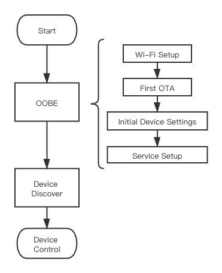

Linkplay Music Kit
Linkplay Music Kit is the app side SDK for Linkplay Home Audio solution；you can use it to implement our solution into your product.

MusicKit mainly solves 2 issues：
- Maintain the commnunication protocol with our firmware so that your app could interact with the device without concerning the comlexity of the lower layers.
- Wrapper the complexity of cloud services (includes music services and voice services etc.) so that you can intergtate them rapidly and don't bother the details.
When user bring a product home, the procedure is as follows:

OOBE
Out-of-box experience. The experience of this procedure should be as simple and stable as possible.
As we can see, the procdeure is from hardware to software, from bottom to higher:
| Procedure | Layer |
|---|---|
| Wi-Fi Setup | Data link layer |
| First OTA | Firmware system |
| Initial Device Settings | System software settings, like timezone, language, etc. |
| Service Setup | Application layer settings, all software services settings |
Wi-Fi Setup
The first step is connecting device to internet. We have the following ways for you to setup the Wi-Fi:
| Name | Description |
|---|---|
| BLE Setup | If your device supports BLE, then you can choose this way |
| SoftAP Setup | If your device only has Wi-Fi module, then you can choose this way |
When user brought product home, maybe it has been a long time after the MP. To bring better user experience to customer, the first OTA can not be skipped.
- Initial Device Settings
After hardware and firmware are all in best status, then it's time to do some localized work, such as:
- Language
- Timezone
- Period for silient OTA
- Service Setup
Then, the last step is to setup the application layer service:
- Music services, such as Tunein, Amazon Music
- Voice services，such as Alexa
After this, the OOBE procedure is finished, and user can start to enjoy the service brought by your product.
Device Discover
Device discover is the pre-condition to communicate with the device: Device Discover
In our solution, device discover is based on the most popular LAN protocol for this:
So that we could assure the steability of this procedure.
Device Control
Play Control
Play Control is the main function that this solution supports.
Other Functions
- Alarm
- Preset
- OTA
Music Services Intergtation
We have already intergated many popular music services for you, includes:
- Amazon Music
- TuneIn
- iHeartRadio
Please contact your interface to get each SDK and documents.